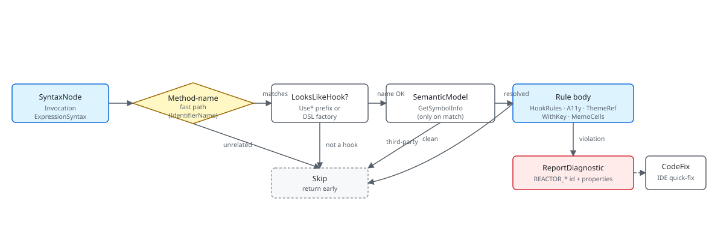

Microsoft.UI.Reactor (Reactor) ships a small Roslyn analyzer suite that catches mistakes the
type system can't — conditional hook calls, missing list keys,
hardcoded colors, icon buttons with no accessible name, stale closure
captures in UseMemoCells, and missing XML docs on public API. The
analyzers run inside the C# compiler on every build, so a violation
shows up as a red squiggle in the editor before you ever run the app.
They're written to be cheap: each one starts with a syntactic gate
(does this invocation even mention the method name we care about?)
before consulting the SemanticModel, which is
where the expensive type resolution lives. The most common mistake is
authoring a new analyzer that hits SemanticModel.GetSymbolInfo on
every InvocationExpression — that single change can double build
time on a large solution.
Analyzer Architecture¶
This page walks through the Reactor analyzer pipeline end-to-end:
how a diagnostic descriptor wires into the C# compilation, what
happens on each InvocationExpression, and how to add your own
rule. The user-facing catalog of diagnostics lives on the
Rules of Reactor page; this is the contributor
view. The analyzers sit in
src/Reactor.Analyzers/ and
are pulled into every Reactor consumer through the SDK's
Analyzers ItemGroup.
The rule pipeline¶

Every analyzer is a DiagnosticAnalyzer that registers one or more
syntax-node actions in Initialize. The host (Roslyn) hands the
analyzer a SyntaxNodeAnalysisContext per matching node; the analyzer
inspects the node, optionally walks the SemanticModel
to resolve symbols, and calls context.ReportDiagnostic when it finds a
violation. Reactor's analyzers all match on SyntaxKind.InvocationExpression
because every diagnostic in the catalog fires on a method call — a hook,
a factory, a modifier, a LINQ Select.
public override void Initialize(AnalysisContext context)
{
context.ConfigureGeneratedCodeAnalysis(GeneratedCodeAnalysisFlags.None);
context.EnableConcurrentExecution();
context.RegisterSyntaxNodeAction(AnalyzeInvocation, SyntaxKind.InvocationExpression);
context.RegisterSyntaxNodeAction(AnalyzeSetterStaleRead, SyntaxKind.InvocationExpression);
context.RegisterSyntaxNodeAction(AnalyzeMutateThenSet, SyntaxKind.InvocationExpression);
context.RegisterSyntaxNodeAction(AnalyzeMemo, SyntaxKind.InvocationExpression);
}
private static void AnalyzeInvocation(SyntaxNodeAnalysisContext context)
{
var invocation = (InvocationExpressionSyntax)context.Node;
var methodName = GetInvokedMethodName(invocation);
if (methodName is null) return;
if (!LooksLikeHook(methodName)) return;
if (!IsLikelyReactorHook(context, invocation)) return;
The four cheap calls at the top do the heavy lifting on cost:
GetInvokedMethodName reads the syntax tree only, LooksLikeHook
matches a Use prefix on the bare string, and IsLikelyReactorHook
short-circuits on using directives so a third-party method named
UseSomething doesn't trip the rule. Only after all three pass does
the rule body run. The same fast-path / slow-path layering shows up in
every analyzer in the suite — it's the difference between a rule that
costs microseconds per file and one that re-walks the symbol graph on
every invocation.
Caveat:
SemanticModel.GetSymbolInfois allocation-heavy and not free even on a single call. Don't reach for it inside the syntax callback unless a cheaper syntactic check has already filtered the node down to plausible candidates. TheMissingWithKeyAnalyzeris the extreme: it never callsGetSymbolInfoat all. ItsREACTOR_DSL_001arm decides with a substring check for.WithKey(in the lambda body — false positives only fire when the layout container also turns out to be a Reactor factory, which the analyzer then confirms by name list. ItsREACTOR_DSL_002arm (non-stable keys) goes a step further but stays just as syntactic: it walks the key expression and matches lambda parameter names and well-known per-render calls (Guid.NewGuid(),DateTime.Now, …) by name, still without resolving a single symbol.
Diagnostic descriptors¶
Every diagnostic is described by a DiagnosticDescriptor — the id, the
title, the message format, the category, the severity, and the help URL
(when one exists). The descriptor is static readonly so Roslyn can
deduplicate it across analyzer instances.
private static void AnalyzeInvocation(SyntaxNodeAnalysisContext context)
{
var invocation = (InvocationExpressionSyntax)context.Node;
// Match: Button(expr, action) as a factory call (IdentifierNameSyntax, not member access)
if (invocation.Expression is not IdentifierNameSyntax identifier)
return;
if (identifier.Identifier.Text != "Button")
return;
var args = invocation.ArgumentList.Arguments;
if (args.Count != 2)
return;
// If the first argument is a string literal, it's a text button — no diagnostic needed
var firstArg = args[0].Expression;
if (firstArg is LiteralExpressionSyntax literal
&& literal.IsKind(SyntaxKind.StringLiteralExpression))
return;
// Check the fluent chain for .AutomationName()
if (HasModifierInChain(invocation, "AutomationName"))
return;
context.ReportDiagnostic(Diagnostic.Create(
Rule,
invocation.GetLocation()));
}
AnalyzeInvocation here is the rule body for REACTOR_A11Y_001:
it matches Button(expr, action) as an IdentifierNameSyntax-rooted
call (not a member access — that filter alone rejects most invocations
in a typical codebase), then walks back up the fluent chain looking for
a .AutomationName(...) modifier. The walk caps at the enclosing
statement so a chain that wanders into another statement doesn't
falsely satisfy the rule. The HasModifierInChain helper is the same
shape every analyzer that needs to look at trailing modifiers uses.
The current diagnostic set¶
These are the rules shipping out of
src/Reactor.Analyzers/ today.
Severity is the default; consumers can promote or suppress per project
via .editorconfig.
| Id | Severity | Title | Source |
|---|---|---|---|
REACTOR_THEME_001 |
Warning | Use ThemeRef instead of hard-coded color | UseThemeRefAnalyzer.cs |
REACTOR_THEME_002 |
Info | Consider lightweight styling for visual-state overrides | UseLightweightStylingAnalyzer.cs |
REACTOR_THEME_003 |
Info | RequestedTheme modifier available | RequestedThemeSetAnalyzer.cs |
REACTOR_THEME_004 |
Warning | Hard-coded Brush/Color object bypasses theme tokens | UseThemeRefAnalyzer.cs |
REACTOR_HOOKS_001 |
Warning | Hook called conditionally | HookRulesAnalyzer.cs |
REACTOR_HOOKS_004 |
Warning | Hook deps contains freshly allocated value | HookRulesAnalyzer.cs |
REACTOR_HOOKS_005 |
Warning | Hook called outside Render or custom-hook method | HookRulesAnalyzer.cs |
REACTOR_HOOKS_006 |
Info | UseResource fetcher looks non-idempotent (use UseMutation for writes) | HookRulesAnalyzer.cs |
REACTOR_HOOKS_007 |
Warning | Builder closure capture missing from dependencies | UseMemoCellsAnalyzer.cs |
REACTOR_HOOKS_008 |
Info | State variable read after its setter was called in the same synchronous handler (stale read) | HookRulesAnalyzer.cs |
REACTOR_HOOKS_009 |
Warning | Command.DebounceMs is inert unless the command is routed through UseCommand | CommandDebounceAnalyzer.cs |
REACTOR_HOOKS_011 |
Warning | Controlled input has a state-derived value but an inert change callback | ControlledInputAnalyzer.cs |
REACTOR_A11Y_001 |
Warning | Icon-only button needs an accessible name | AccessibilityAnalyzers.cs |
REACTOR_A11Y_002 |
Warning | Image needs alt text or AccessibilityHidden | AccessibilityAnalyzers.cs |
REACTOR_A11Y_003 |
Warning | Form field needs a label | AccessibilityAnalyzers.cs |
REACTOR_A11Y_004 |
Warning | Clickable container (.OnTapped) is not keyboard-reachable; add .IsTabStop(true) | AccessibilityAnalyzers.cs |
REACTOR_REF_001 |
Warning | Use descriptor.Reference/binding.Reference instead of assigning ElementRef.Current to reference properties | ReferenceCurrentReadAnalyzer.cs |
REACTOR_DSL_001 |
Warning | Dynamic list item missing .WithKey | MissingWithKeyAnalyzer.cs |
REACTOR_DSL_002 |
Info | Non-stable .WithKey (index / Guid.NewGuid / DateTime.Now) | MissingWithKeyAnalyzer.cs |
REACTOR_DSL_003 |
Warning | Typed collection keySelector never keys by item (returns constant/null or ignores the item), forcing a keyed-diff bailout | ConstantKeySelectorAnalyzer.cs |
REACTOR_DOCK_001 |
Warning | OnLiveLayoutChanged feeds the live layout back into state | OnLiveLayoutRoundTripAnalyzer.cs |
REACTOR_DOC_001 |
Warning | Public API missing XML doc summary | XmlDocSummaryAnalyzer.cs |
REACTOR_EVENT_001 |
Warning | Event wired via .Set(+=/-=) re-subscribes every render; use a declarative On* modifier or .OnMountAdd/.OnUnmountAdd | SetEventSubscriptionAnalyzer.cs |
REACTOR_POOL_001 |
Warning | .Set writes a property reset on pool return — either fe.PROP = v or Owner.SetPROP(fe, v); use the surviving Reactor modifier |
PoolResetSetAnalyzer.cs |
REACTOR_ITEMS_001 |
Warning | .Set(ItemsSource=...) on a Reactor-owned collection | SetOwnedItemsSourceAnalyzer.cs |
REACTOR_ITEMS_002 |
Warning | ItemsView viewBuilder returns a statically non-ItemContainer root (mount-time InvalidOperationException); wrap it with ItemContainer(...) | ItemsViewContainerRootAnalyzer.cs |
REACTOR_CTRL_001 |
Warning | .Set(SelectedItem/SelectedValue) fights controlled SelectedIndex | SetSelectedItemAnalyzer.cs |
REACTOR_VIS_001 |
Warning | Imperative .Set(Visibility=...) instead of .IsVisible(...) | PoolResetSetAnalyzer.cs |
REACTOR_WIN2D_001 |
Error | Win2D canvas draws UseCanvasResources output without .UseSharedDevice() (fatal cross-device draw) | Win2DSharedDeviceAnalyzer.cs |
REACTOR0050 |
Warning | Optional |
OneWayClearValueAnalyzer.cs |
REACTOR_PERSIST_001 |
Warning | 2-arg UsePersisted defaults to Application scope; specify scope | UsePersistedScopeAnalyzer.cs |
REACTOR_DESC_001 |
Warning | ControlRegistry.Register* lambda should be static (trim hygiene) | StaticRegisterLambdaAnalyzer.cs |
REACTOR_STATE_001 |
Warning | INotifyPropertyChanged on a Component is invisible to the render loop | ComponentInpcAnalyzer.cs |
REACTOR_THREAD_002 |
Warning | Blocking a Task (.Result/.Wait) in Render/effect | BlockingTaskAnalyzer.cs |
REACTOR_OPT_001 |
Info | Selection sentinel literal force-asserts instead of Optional |
OptionalSentinelAnalyzer.cs |
REACTOR_CMD_001 |
Info | Raw-init Command + own click callback both set (callback wins; command never runs) | RawCommandCallbackAnalyzer.cs |
REACTOR_THREAD_001 |
Warning | UI-thread-only mutator called on a background thread | UIThreadAffinityAnalyzer.cs |
REACTOR_HOOKS_002 |
Info | Hook after an early-return guard | HookRulesAnalyzer.cs |
REACTOR_HOOKS_003 |
Warning | async-void UseEffect body | HookRulesAnalyzer.cs |
REACTOR_HOOKS_010 |
Warning | Mutate-then-set reference state (same ref re-passed to setter) | HookRulesAnalyzer.cs |
REACTOR_HOOKS_012 |
Warning | Memo dependency lacks value equality | HookRulesAnalyzer.cs |
REACTOR_HOOKS_013 |
Warning | UseState/UsePersisted initial value allocated every render | HookRulesAnalyzer.cs |
REACTOR_CTX_001 |
Info | Context value re-allocated each render (reference-equality type) | ContextProvideAnalyzer.cs |
REACTOR_GRID_001 |
Warning | Declared Grid column/row that no child occupies (unused track) | UnusedGridTrackAnalyzer.cs |
REACTOR_INPUT_001 |
Warning | Ctrl/Alt chord on .OnKeyDown is focus-scoped; use a Command accelerator | OnKeyDownChordAnalyzer.cs |
REACTOR_PERF_FUNCREF |
Info | Command constructed inline in the render path is re-allocated every render; wrap it in UseMemo | MemoizeCommandAnalyzer.cs |
REACTOR_ANIM_002 |
Info | Unstable .Keyframes trigger (DateTime.Now / Guid.NewGuid / per-render allocation) restarts the animation every render | KeyframeTriggerAnalyzer.cs |
REACTOR_INPUT_002 |
Warning | Unsafe TryGetFiles in .OnDrop returns UNC/reparse/virtual files; use TryGetSafeLocalFiles | UnsafeDropFilesAnalyzer.cs |
REACTOR_NAV_001 |
Warning | UseNavigation handle captured into a static field or property outlives the page and pins its dispatcher | StaticNavigationHandleAnalyzer.cs |
REACTOR_DIALOG_001 |
Warning | Imperative ContentDialog.ShowAsync escapes the render tree; use the controlled ContentDialog(...) element with IsOpen | ImperativeContentDialogAnalyzer.cs |
REACTOR_MOD_001 |
Info | Same atomic-replace placement modifier (.Grid/.Canvas/.RelativePanel/.Flex) applied twice in one chain; last-wins overwrite drops earlier args (ships a merge fix) | DuplicateAtomicModifierAnalyzer.cs |
REACTOR_MOD_002 |
Info | .Set assigns a property that has a first-class fluent modifier; the write re-runs every render, is never unwound, and pins the element to the update path (ships a chain-rewrite fix) | PoolResetSetAnalyzer.cs |
REACTOR_MOD_003 |
Warning | Common modifier applied to an element whose mounted control is outside the types ApplyModifiers writes it to, so the value is silently dropped (e.g. .Background(...) on a Rectangle renders an invisible shape); ships a did-you-mean fix to .Fill/.Stroke for shapes |
NoOpModifierAnalyzer.cs |
REACTOR_MEDIA_001 |
Info | WebView2 is a direct child of an auto-layout stack (HStack/VStack/FlexRow/FlexColumn) without explicit .Width/.Height | UnsizedWebViewInStackAnalyzer.cs |
REACTOR_ANIM_003 |
Warning | async lambda to WithAnimation loses the ThreadStatic scope after await | AnimationScopeAsyncAnalyzer.cs |
REACTOR_LIFECYCLE_002 |
Warning | UseEffect(Action) allocates a timer/subscription/event with no returned cleanup | EffectCleanupAnalyzer.cs |
REACTOR_MEMO_001 |
Info | Modifiers on a keyed Memo(key,factory) wrapper opt the row out of the recycle cache | MemoWrapperModifierAnalyzer.cs |
REACTOR_DYM_001 |
Warning | Reactor property/field invoked like a method (e.g. GridSize.Auto()) |
NonInvocableMemberParensAnalyzer.cs |
REACTOR_DYM_002 |
Warning | Invented Theme.*Background token (e.g. Theme.AppBackground); use Theme.SolidBackground (Theme.LayerBackground → Theme.LayerFill) |
ThemeBackgroundSuffixAnalyzer.cs |
REACTOR_DYM_003 |
Warning | Mistyped Reactor factory name in call position (e.g. Buton(...)) |
FuzzyFactoryNameAnalyzer.cs |
REACTOR_DYM_004 |
Warning | Reactor factory called with too few arguments (CS7036), single unique overload — suggests the parameter shape | MissingFactoryArgumentAnalyzer.cs |
REACTOR_DYM_005 |
Warning | String passed where a Reactor Element is expected (CS1503) — wrap it in a text factory |
StringForElementArgumentAnalyzer.cs |
REACTOR_HOOKS_002 and _003 were the reserved control-flow / data-flow slots
(variable hook counts across early returns, async boundaries inside UseEffect);
they now ship — _002 flags a hook after a single-guard early return, _003
flags an async-void UseEffect body (spec 060 §4.1).
Symbol-grounded matching — the WithKey case¶
static void AnalyzeMissingKey(SyntaxNodeAnalysisContext ctx, InvocationExpressionSyntax inv)
{
// Single lambda argument with an invocation body.
if (inv.ArgumentList.Arguments.Count != 1) return;
if (inv.ArgumentList.Arguments[0].Expression is not LambdaExpressionSyntax lambda) return;
var body = lambda.Body;
if (body is BlockSyntax block) body = ExtractReturnExpression(block) ?? body;
if (body is not InvocationExpressionSyntax) return;
// Cheap textual probe — analyzers run hot, so avoid full symbol resolution.
// If the lambda body mentions ".WithKey(" anywhere, assume it's keyed.
var bodyText = body.ToString();
if (bodyText.Contains(".WithKey(")) return;
REACTOR_DSL_001 is the loudest example of
syntactic-only matching done right. It fires on
items.Select(x => Row(x)) where Row(...) doesn't end in
.WithKey(...), and the entire decision is a substring check on
body.ToString(). The trade-off is conservative: a Select projecting
to a non-Reactor element type also gets the substring check, but the
follow-on IsConsumedAsLayoutChildren walk filters to
VStack / HStack / FlexRow / Grid / WrapGrid
parents by name. False positives require the user to be inside one of
those layout factories and projecting a method that happens not to
end in .WithKey — rare enough that the syntactic-only approach is
correct.
private static void AnalyzeInvocation(SyntaxNodeAnalysisContext context)
{
var invocation = (InvocationExpressionSyntax)context.Node;
if (invocation.Expression is not MemberAccessExpressionSyntax memberAccess)
return;
var methodName = memberAccess.Name.Identifier.Text;
if (!TargetMethods.Contains(methodName))
return;
var args = invocation.ArgumentList.Arguments;
if (args.Count == 0)
return;
// Check if the first argument is a string literal
var firstArg = args[0].Expression;
if (firstArg is not LiteralExpressionSyntax literal)
return;
if (!literal.IsKind(SyntaxKind.StringLiteralExpression))
return;
var colorValue = literal.Token.ValueText;
REACTOR_THEME_001 is a counterpoint: the rule
needs to read the string literal that follows
.Background("...") / .Foreground("...") / .WithBorder("...") and
map it to a suggested theme token. The descriptor message format has a
{0} slot for the suggested token, which the analyzer looks up in
ColorToThemeToken after the syntactic match. The diagnostic flows
through to a paired CodeFixProvider that rewrites the literal to the
matching Theme.Accent / Theme.PrimaryText member.
Local-dataflow matching — the DebounceMs case¶
REACTOR_HOOKS_009 sits at the other end of the
spectrum from the substring-only WithKey check: it needs a little local
data-flow. Command.DebounceMs only takes effect when the command is
routed through UseCommand — the leading-edge debounce window lives in
the hook store, and a plain Command record reconstructed every render
has nowhere to persist it. So Button(new Command { … DebounceMs =
1500 }) is silently inert; nothing fails at compile or run time.
CommandDebounceAnalyzer anchors on the new Command { … } /
… with { DebounceMs = … } expression that sets a non-zero
DebounceMs, confirms via the semantic model that the type is the
Reactor Command / Command<T>, then asks one question: does this
value reach a control binding without passing through UseCommand?
When the command is assigned to a local, the rule walks every in-scope
reference to that local — if any reference is an argument to
UseCommand, the command is correctly routed and the rule stays
silent; if instead it flows into a Reactor binding factory (Button,
MenuItem, the .Command(...) modifier, …) the rule fires. A command
that is merely returned or stored is left alone, so a factory method
like Command MakeSave() => new Command { … DebounceMs = … } is not a
false positive. The paired code fix wraps the offending expression in
UseCommand(...).
Property-bag handoff to the code fix¶
Some rules carry data from the analyzer to the fix provider that isn't
trivial to recover from the diagnostic location alone. The
UseMemoCellsAnalyzer does this — when the
builder lambda closes over a variable that isn't in deps, the rule
needs to tell the code fix which variable name to add:
private static void AnalyzeInvocation(SyntaxNodeAnalysisContext context)
{
var invocation = (InvocationExpressionSyntax)context.Node;
var name = GetInvokedMethodName(invocation);
if (name is null || !HookNames.Contains(name)) return;
var model = context.SemanticModel;
var symbol = model.GetSymbolInfo(invocation).Symbol as IMethodSymbol;
if (symbol is null) return;
// Match by symbol so user-defined methods named UseMemoCells in
// unrelated namespaces don't trip the analyzer.
if (!IsReactorMemoCellsHook(symbol)) return;
CaptureNameProperty is the contract. The rule body, after walking the
lambda's body for unbound captures, writes the variable name into
Diagnostic.Properties keyed by that string. The fix provider reads it
back out and inserts the corresponding argument into the call's
deps list. Round-tripping through the property bag is the supported
pattern — embedding the value in the message text would break the
fix the moment the message changes or gets localized.
One id, two syntactic shapes — the attached-property case¶
Every rule in the .Set family starts from an assignment:
SetLambdaHelpers hands the analyzer the
AssignmentExpressionSyntax nodes in the lambda body, and each rule
layers its own member/type check on top. That shape covers instance
properties only. An attached-property write is a static call —
AutomationProperties.SetName(fe, "Save") — an
InvocationExpressionSyntax with no assignment anywhere in it, so it
was structurally invisible to the whole family:
// Both are lost when the pooled control is reused. Only the first one
// was diagnosed before the attached shape was added.
.Set(fe => fe.Margin = new Thickness(8))
.Set(fe => AutomationProperties.SetName(fe, "Save"))
ElementPool.CleanElement used to clear far more attached properties
than instance ones, so this was the larger half of REACTOR_POOL_001's
subject matter — all of it in the "your write is silently discarded"
class. Issue #985 has since closed the gap from the other side (the
receiver-gated Padding / CornerRadius / Border* / Background /
IsEnabled chain), so the two halves are now comparable in size. The
failure is identical either way, so both shapes report the same
diagnostic id rather than a new one; only the matching differs.
Keyed by owner, not by property name. The instance table,
ModifierTable.Properties, is keyed by the bare property name, and
attached properties collide there: AutomationProperties.SetName
would key as Name, which is FrameworkElement.Name — a different,
modifier-less property the framework itself writes. Attached entries
therefore live in their own ModifierTable.AttachedProperties, keyed
Owner.Property. The key uses the dependency property's base name
(the PROP in OWNER.PROPProperty, which is what the consistency
test scans CleanElement for), and carries the setter method name
separately, because the two are not always the same —
FlexPanel.SetMinWidth writes FlexMinWidthProperty.
Three gates, cheapest first. The syntactic shape (a two-argument
Owner.SetPROP call) is free; the receiver-identity check — the first
argument must be the lambda parameter itself, looking through
parentheses and casts — is the one doing the real work, and mirrors
what GetAssignedMemberAccess does for assignments. Without it,
.Set(panel => Grid.SetRow(panel.Children[0], 1)) would report a
write that never touches the pooled control. Last is a semantic pin on
the owner's namespace, so a user type that happens to be called
AutomationProperties stays silent. Owners with nothing in the table —
Canvas, ScrollViewer, Grid — never reach any of it.
Not everything gets a fix. An entry is auto-fixable only when the
setter's single value argument can be handed to the modifier verbatim.
ToolTipService.SetToolTip(b, "x") → .ToolTip("x") qualifies;
AutomationProperties.SetPositionInSet(fe, 2) does not, because
.PositionInSet(position, size) takes two arguments, and neither do
the eleven FlexPanel properties that all funnel into a single
.Flex(...) call. Those stay diagnostic-only. That split rides to the
fix provider through a second property-bag key alongside the reported
set, because part of the decision is semantic — whether
SetToolTip's object argument really is a string — and the
analyzer is the side that already holds a SemanticModel.
The doc-system analyzers¶
Phase 1.8 of spec 041 added
an analyzer that doesn't fire on application code at all — it fires
on the Reactor SDK's own source to keep the auto-generated reference
docset honest. REACTOR_DOC_001 flags any public type, method,
property, or event without a <summary> XML doc comment. It runs
during the dotnet build of Reactor.csproj itself; downstream
consumers don't see it. Unresolved cref="X" attributes are caught by
the built-in CS1574 (configured in src/Reactor/.editorconfig); a
former REACTOR_DOC_002 analyzer mirrored that same check under a
Reactor-specific id but added no analysis on top, so it was removed.
The doc analyzer registers a SymbolAction instead of a
SyntaxNodeAction — the question it answers is per-symbol
(is this symbol documented?) rather than per-syntax-node, so the
symbol-level callback is the cheaper and more accurate hook. This is
the second registration pattern in the codebase; everything else uses
the syntax-node pattern from the rule pipeline above. When you author a
new analyzer, the question to ask first is "is this rule about a
location in source, or about a thing in the type system" — the answer
picks the registration kind.
Patterns¶
Authoring a new analyzer¶
The minimum new-analyzer surface is one descriptor, one registration,
one rule body, and one entry in the project's AnalyzerReleases.Shipped.md
when the rule moves out of preview. Start by writing the descriptor
with a stable id that follows the REACTOR_<CATEGORY>_<NNN> convention:
public const string DiagnosticId = "REACTOR_MYTHING_001";
private static readonly DiagnosticDescriptor Rule = new(
DiagnosticId,
title: "One-line title",
messageFormat: "Specific problem: {0}",
category: "Reactor.MyThing",
defaultSeverity: DiagnosticSeverity.Warning,
isEnabledByDefault: true,
description: "Why this is wrong and what to do instead.");
Then register the syntax-node action in Initialize and write the
rule body. Mirror the layering from
HookRulesAnalyzer — cheapest syntactic check
first, name fast-path second, symbol resolution last, diagnostic
report only after all of those. If the rule wants a code fix, route
the relevant capture into Diagnostic.Properties and pair the
analyzer with a CodeFixProvider in the same assembly. Add a unit
test under tests/Reactor.Analyzers.Tests/ for the positive case,
the negative case, and any edge that almost trips the syntactic
fast path — those are the regressions that bite later.
Common Mistakes¶
Reaching for SemanticModel on every node¶
// Don't:
private static void AnalyzeInvocation(SyntaxNodeAnalysisContext context)
{
var invocation = (InvocationExpressionSyntax)context.Node;
var symbol = context.SemanticModel.GetSymbolInfo(invocation).Symbol;
if (symbol is not IMethodSymbol m) return;
if (m.Name != "Button") return;
// ...
}
public override void Initialize(AnalysisContext context)
{
context.ConfigureGeneratedCodeAnalysis(GeneratedCodeAnalysisFlags.None);
context.EnableConcurrentExecution();
context.RegisterSyntaxNodeAction(AnalyzeInvocation, SyntaxKind.InvocationExpression);
context.RegisterSyntaxNodeAction(AnalyzeSetterStaleRead, SyntaxKind.InvocationExpression);
context.RegisterSyntaxNodeAction(AnalyzeMutateThenSet, SyntaxKind.InvocationExpression);
context.RegisterSyntaxNodeAction(AnalyzeMemo, SyntaxKind.InvocationExpression);
}
private static void AnalyzeInvocation(SyntaxNodeAnalysisContext context)
{
var invocation = (InvocationExpressionSyntax)context.Node;
var methodName = GetInvokedMethodName(invocation);
if (methodName is null) return;
if (!LooksLikeHook(methodName)) return;
if (!IsLikelyReactorHook(context, invocation)) return;
The anti-pattern resolves a full symbol on every invocation in the
compilation — every .ToString(), every string.Format, every
LINQ method, every method call in every test file. The correct shape
checks the method name syntactically first and only resolves the
symbol after the cheap check passes. On a large solution the
difference is seconds of build time per file.
Tips¶
Match IdentifierNameSyntax for factories, MemberAccessExpressionSyntax
for modifiers. Reactor factories are imported as
using static so they show up as bare identifiers
(Button(...), VStack(...)). Modifiers are always
.Method(...) chains, which are member accesses. Splitting on the
expression kind early prunes most of the irrelevant invocations
before any name check runs.
Use Diagnostic.Properties for the fix-provider handoff. Anything
the fix needs that isn't trivially recoverable from the diagnostic
Location goes in the property bag. Re-parsing the message text
breaks the moment the message is touched.
Run the analyzer against samples/. The Reactor sample apps
collectively cover every modifier and every hook combination the test
suite cares about. A new analyzer that produces zero findings against
samples/ either over-fits its tests or has a syntactic gate that's
too narrow — both warrant a look before merge.
Next Steps¶
- Rules of Reactor — User-facing catalog of every diagnostic in the suite.
- Theming Tokens — How
REACTOR_THEME_001plugs into the styling story. - Accessibility — How the
REACTOR_A11Y_*rules read code. - Hooks Internals — Why the hook rules exist; the slot-table invariant they protect.
- DevTools Internals — Next under-the-hood page.